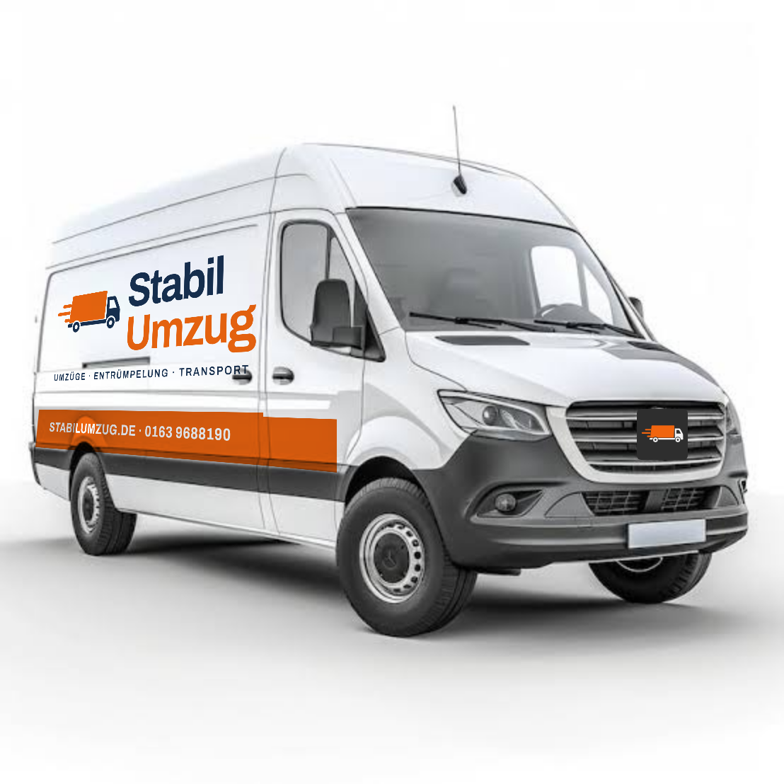

Moves, clear-outs and transport in Essen.
Solidly planned.
Moves, clear-outs, household clearances and transport – across the Ruhr area and all of Germany. Free personal quote within 24 hours.

- 10 minplanner, no account
- 24 hto your quote
- 7 daysa week reachable
- 0 cookiesno ad trackers
A move is a chain. We hold it together.
Each step needs information from the one before. The first two – measuring the new home and listing your belongings – decide almost everything that follows.
You move in. We carry.
From the first box to the assembled bed: our crew takes the heavy lifting so you can look forward to your new home.
From planning to ticking off.
Four steps with you – without a site visit when your details are enough.
- 01
Plan online
Rooms, furniture, access – rough is fine. You see volume, vehicle and crew size right away.
- 02
Personal quote
We check your details and send the quote via WhatsApp or email. A short video check if anything is uncertain.
- 03
Moving day with a fixed crew
Our own transporter and a contact person on site.
- 04
Arrive & tick off
Furniture assembly, handover record, invoice.
Describe it once. Reuse it everywhere.
What you enter in the planner flows into the quote, crew planning, no-parking zone and checklist. Nobody asks you twice.
- Items → volume, vehicle, boxes
- Floor and carry distance → crew size and time
- Date → parking permit, bulky waste, registration
What decides your price
No flat price out of thin air: your quote has eight parts, each with a clear basis. We show no prices online – we calculate personally.
Labour
Volume, crew size and hours.
from your itemsVehicle
Truck size and number of days.
from volume and weightDistance
Kilometres of each leg, overnight stay on long routes.
from both addressesAssembly
Minutes per piece to dismantle and assemble.
from the furniture cataloguePacking
Boxes, material and packing hours.
from the box countAccess
Floor, lift, carry distance, furniture lift.
from both buildingsExtras
Parking permit, disposal, kitchen, storage.
from your choicesInsurance
Declared value of your belongings.
from your declarationRough is fine. It stays honest anyway.
- Pick from the catalogue, take a preset, guess per room or paste a list
- “I don't know” is allowed – uncertain entries are flagged
- Volume as a range with confidence, plus vehicle, crew and hours
- No price online – we calculate your quote personally
Everything from one team.
You choose what we handle. The rest stays with you – and costs less.
Moving
Home moves, office moves, local and long-distance moves – from Essen across Germany.
Learn moreClearance
Clearing a flat, cellar, loft or garage – sorted and disposed of properly.
Learn more
Household clearance
Complete flat, household and house clearance with a swept-clean handover by arrangement.
Learn more
Transport
Furniture transport, small removals, collection and delivery – in Essen and the Ruhr area.
Learn moreExtra services
Furniture assembly, packing service, boxes, no-parking zones, piano transport and more.
Learn morePlainly put: what is covered?
Unclear cover is the most common dispute after a move. So we state exclusions and deadlines up front – in plain words.
- Statutory carrier liabilityIncluded. Covers loss and damage during the move, limited per cubic metre. Not covered: self-packed boxes, valuables, cash.
- Goods-in-transit coverOn request. Covers up to your declared value, including scratches and glass breakage.
- Own household insuranceOften covers old and new home during the move. Report the new address.
- Private liabilityDamage to the building, neighbours or third parties. Complements liability, does not replace it.
Report visible damage at handover, hidden damage in writing within the deadline in the contract. General guidance – your contract states the exact cover.
Briefly answered.
What families ask us most often before a move.
What does a move cost?
The price has eight parts: labour, vehicle, distance, assembly, packing, access, extras and insurance. We show no prices online. You describe your move in the planner, we calculate every line personally and send you the quote within 24 hours. Moving costs
How accurate is the planner estimate?
The planner uses typical planning values per piece of furniture plus a 10 percent buffer. It shows the volume as a range: the more items you confirm in the catalogue, the narrower it gets. If much is uncertain, we check your list in a short video call.
Which areas do you cover?
We are based in Essen and move people across the Ruhr area and all of Germany. On long routes we plan driving time, overnight stay and unloading day.
Do I need a no-parking zone?
If the truck cannot legally stop right at the building, it is usually worth it. It is applied for at the city, and lead times differ by city. On request we handle the application. No-parking zone
Is my furniture insured?
During the move the moving company is liable by law for loss and damage, limited per cubic metre. For higher cover there is extra goods-in-transit insurance up to your declared value. Your contract states the exact cover. Insurance
How early should I book?
As early as you can, especially at month end and in holidays. Short notice often works too – it depends on our schedule.
Ask for free. Reply within 24 h.
Move, clear-out, household clearance or transport: we send your personal, non-binding quote within 24 hours – via WhatsApp or email.